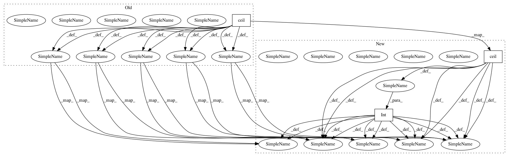

23cb8d9355951a3ca48b9b023678832e209d1fb2,sonnet/python/modules/conv_gpu_test.py,Conv3DTransposeTestDataFormats,testConv3DTransposeDataFormats,#Conv3DTransposeTestDataFormats#,568
Before Change
("WithBias_Stride2", True, 2), ("WithoutBias_Stride2", False, 2))
def testConv3DTransposeDataFormats(self, use_bias, stride):
Check the module produces the same result for supported data formats.
input_shape = (self.INPUT_SHAPE.input_batch,
np.ceil(self.INPUT_SHAPE.input_depth / stride),
np.ceil(self.INPUT_SHAPE.input_height / stride),
np.ceil(self.INPUT_SHAPE.input_width / stride),
self.INPUT_SHAPE.input_channels)
func = functools.partial(
snt.Conv3DTranspose,
output_channels=self.OUT_CHANNELS,
kernel_shape=self.KERNEL_SHAPE,
output_shape=(self.INPUT_SHAPE.input_depth,
self.INPUT_SHAPE.input_height,
self.INPUT_SHAPE.input_width),
use_bias=use_bias,
stride=stride,
initializers=create_initializers(use_bias))
conv_ndhwc = func(name="NDHWC", data_format="NDHWC")
x = tf.constant(np.random.random(input_shape).astype(np.float32))
result_ndhwc = conv_ndhwc(x)
// We will force both modules to share the same weights by creating
// a custom getter that returns the weights from the first conv module when
// tf.get_variable is called.
custom_getter = {"w": create_custom_field_getter(conv_ndhwc, "w"),
"b": create_custom_field_getter(conv_ndhwc, "b")}
conv_ncdhw = func(name="NCDHW", data_format="NCDHW",
custom_getter=custom_getter)
x_transpose = tf.transpose(x, perm=(0, 4, 1, 2, 3))
result_ncdhw = tf.transpose(conv_ncdhw(x_transpose), perm=(0, 2, 3, 4, 1))
self.checkEquality(result_ndhwc, result_ncdhw)
After Change
("WithBias_Stride2", True, 2), ("WithoutBias_Stride2", False, 2))
def testConv3DTransposeDataFormats(self, use_bias, stride):
Check the module produces the same result for supported data formats.
input_shape = (self.INPUT_SHAPE.input_batch,
int(np.ceil(self.INPUT_SHAPE.input_depth / stride)),
int(np.ceil(self.INPUT_SHAPE.input_height / stride)),
int(np.ceil(self.INPUT_SHAPE.input_width / stride)),
self.INPUT_SHAPE.input_channels)
func = functools.partial(
snt.Conv3DTranspose,
output_channels=self.OUT_CHANNELS,
kernel_shape=self.KERNEL_SHAPE,
output_shape=(self.INPUT_SHAPE.input_depth,
self.INPUT_SHAPE.input_height,
self.INPUT_SHAPE.input_width),
use_bias=use_bias,
stride=stride,
initializers=create_initializers(use_bias))
conv_ndhwc = func(name="NDHWC", data_format="NDHWC")
x = tf.constant(np.random.random(input_shape).astype(np.float32))
result_ndhwc = conv_ndhwc(x)
// We will force both modules to share the same weights by creating
// a custom getter that returns the weights from the first conv module when
// tf.get_variable is called.
custom_getter = {"w": create_custom_field_getter(conv_ndhwc, "w"),
"b": create_custom_field_getter(conv_ndhwc, "b")}
conv_ncdhw = func(name="NCDHW", data_format="NCDHW",
custom_getter=custom_getter)
x_transpose = tf.transpose(x, perm=(0, 4, 1, 2, 3))
result_ncdhw = tf.transpose(conv_ncdhw(x_transpose), perm=(0, 2, 3, 4, 1))
self.checkEquality(result_ndhwc, result_ncdhw)
In pattern: SUPERPATTERN
Frequency: 7
Non-data size: 3
Instances
Project Name: deepmind/sonnet
Commit Name: 23cb8d9355951a3ca48b9b023678832e209d1fb2
Time: 2018-04-10
Author: noreply@google.com
File Name: sonnet/python/modules/conv_gpu_test.py
Class Name: Conv3DTransposeTestDataFormats
Method Name: testConv3DTransposeDataFormats
Project Name: chainer/chainercv
Commit Name: 93cfd8bd22d6b798b94aead3c8ea75ace2727265
Time: 2019-02-18
Author: shingogo@hotmail.co.jp
File Name: chainercv/functions/ps_roi_max_align_2d.py
Class Name: PSROIMaxAlign2D
Method Name: backward_cpu
Project Name: deepmind/sonnet
Commit Name: 23cb8d9355951a3ca48b9b023678832e209d1fb2
Time: 2018-04-10
Author: noreply@google.com
File Name: sonnet/python/modules/conv_gpu_test.py
Class Name: Conv2DTransposeTestDataFormats
Method Name: testConv2DTransposeDataFormats
Project Name: deepmind/sonnet
Commit Name: 23cb8d9355951a3ca48b9b023678832e209d1fb2
Time: 2018-04-10
Author: noreply@google.com
File Name: sonnet/python/modules/conv_gpu_test.py
Class Name: Conv1DTransposeTestDataFormats
Method Name: testConv1DTransposeDataFormats